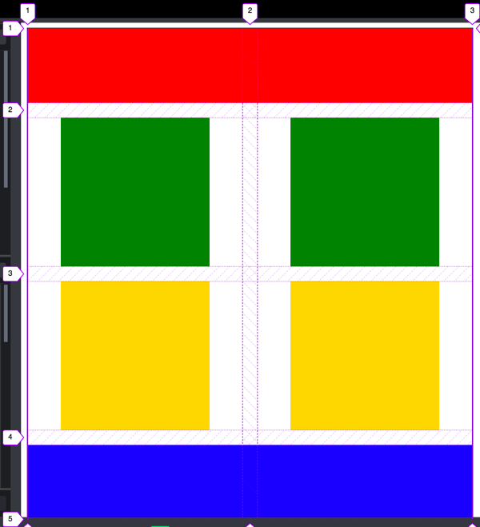
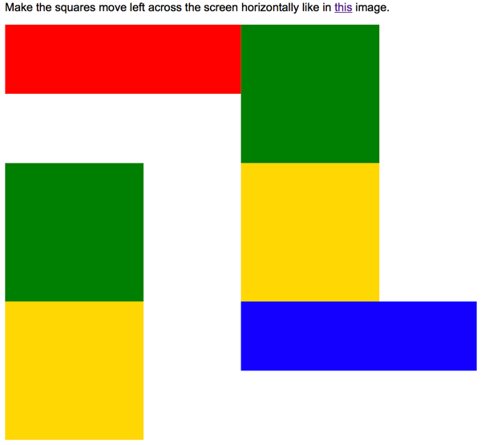

Log into your editer and verify that you have the files positioning.html and positionstyles.css
as part of your project. These should have come when you did the remix step at the beginning of
the semester.
Solve the challenges
Modify the css to make the boxes in the html match the patterns in the images for each activity.
Exercise 1
To help get you started we will solve exercise 1 together.
Begin by looking at the image indicating what we are trying to do. It should look like the
figure below

Exercise 1
For this first exercise I've given you a little extra information with the image. It includes
the Grid lines so you can easily see how it is structured. We can quickly see that this is a
Grid with two columns and 4 rows. There is also a gap between the rows and columns.
Take a look also at the HTML we have to work with.
The first step with using CSS Grid is to identify which elements we are trying to move (these
will be the Grid Items or Children) and then find their parent (this will be the GRid container
or parent). CSS Grid is turned on at the parent. Once we do that all of the direct
children of that element become Grid Items. Because of this it is helpful if all of the
elements we need to position share a common parent.
In this case we want to move the colored boxes. (red1, green1, yellow1, blue1) and
lucky for us
they all share a common parent already...content1
Adjust the box sizes
Before we start our Grid, let's take a moment and make sure the boxes are all the right size and
shape. The image above show that red and blue should be full width. An
easy way to make something full width is to set it's width to 100%.
Change the px on the existing rules to a %
green and yellow look to be about twice their current size. So lets change
their height and width to be 200px
Turn on Css Grid
For the rest of this activity it will be helpful if you open this link: CSS-Tricks
Guide to Grid and keep it handy.
Switch to the CSS file now (positionstyles.css) and find the section of code for the
first exercise. You will find that there is already a rule defined for .content1.
Enable Css Grid for that element by adding the line display: grid; to that rule.
You will notice that nothing changed! We have to define at least the columns of the Grid we need
before anything happens. Let's do that next. If you review the example image again you will see
that we need two equal columns for our grid. That is easy to do with the fr unit and
the grid-template-columns property. If we add that our rule should look like the
following:
.content1 {
/* This is the parent of the activity 1 boxes. */
display: grid;
grid-template-columns: 1fr 1fr;
}
As soon as you define those columns you should see a change. It should look similar to the
figure below:

Exercise 1 halfway there!
IT's actually a lot closer to finished than it might appear!
Finishing up
To get our layout to match the image we really only have three steps left. The first it to tell
red and blue that they should take up two columns instead of the
default one. And then we need to adjust the horizontal alignment of the yellow and green boxes.
Finally we need to add some space beteen the columns and rows.
We can use the grid-column property to specify how many columns an element should
span. Remember that when using this property we specify the column by describing the grid lines
it falls between. If you look at the example image again you will notice that there are numbers
along the top edge. If we want something in column one, we would place it between line 1 and
line 2. If we want something to take up all of column 1 and 2 then we would place it
between lines 1 and 3! Look at the CSS below to see what this would look like for the
red box
Horizontal Alignment is controlled with the justify- properties. In this case the
specific one we want is justify-items. We can add this to our grid container to
center the yellow and green boxes. My rule now looks like this:
.content1 {
/* This is the parent of the activity 1 boxes. */
display: grid;
grid-template-columns: 1fr 1fr;
justify-items: center;
}
Almost there now! One last item. We are supposed to have some space (called a gap) between our
rows and columns. We can use the grid-gap property to add this. I think about 20px
should be good. My final CSS for my grid container looks like this:
.content1 {
/* This is the parent of the activity 1 boxes. */
display: grid;
grid-template-columns: 1fr 1fr;
justify-items: center;
grid-gap: 20px;
}
Done!
Exercises 2-6
Now complete the rest of the exercises. Help each other out! Here are a few final tips as well.
Tips
Don't overuse position. At first it might seem to be the answer to your
positioning
prayers, but it can quickly become a nightmare if overused. Try to solve layout
problems with
other methods first...and fallback to position only if they don't work.
Remember that margin is a great way to shift things around short distances.
(and
margin-top: -50px; would move an element up by 50px)
When using float remember that the element that you are floating must come
before
the other elements in the HTML. Also remember to clear your floats when you
want
things to stop floating.
CSS Grid is a great way to position elements. Most of these can be most easily solved
by using
it. Remember that to use css grid first find the elements you want to adjust, then find
their
parent.
Use display: grid; on that parent. Also, here a couple of good resources
to help
you with CSS Grid: CSS-Tricks
Guide to Grid, and Grid
Garden
You should be able to solve all of these positioning problems without
modifying the HTML. If you find yourself tempted to tweak the HTML you are probably
working too
hard :)
If you are struggling with an activity, start by simply making the boxes the right size
and
shape. It will often help you to see where to go next.
...and did I mention that you should not modify the HTML? I was pretty
serious
about that :)
Publish
Publish your project in Thimble and open your positioning.html website in your browser to
make sure the web page displays
correctly.
Pay special attention to whether your styles are all displaying. Once verified, submit the
URL to
your page in ILearn.
Your URL will be a little longer this time around. You will start with your normal URL, but
this
time we don't want the index.html file...we want positioning.html, so you URL should
reflect that.
For example if I normally submitted https://thimbleprojects.org/matkat/544661/ as my URL,
for this
assignment I
would submit https://thimbleprojects.org/matkat/544661/positioning.html
Grading
This activity will be graded using the following rubric:
Students completed the assignment as outlined above. (12 points)
Code
Here is the code (both html and css) that this activity is based off of. If something has happened to
the code you got with the setup at the beginning of the semester you can restore it with this. Create
the files as directed below and copy/paste the code.
<!DOCTYPE html>
<html lang="en">
<head>
<!-- HTML - Name: positioning.html -->
<title>Positioning Activity</title>
<link rel="stylesheet" type="text/css" href="css/positionstyles.css" />
</head>
<body>
<div class="activity">
<h2>WDD 130 positioning exercises</h2>
For each activity match make the boxes match the image by modifying the stylesheet.</div>
<div class="activity">
<h2>Activity 1</h2>
<section class="hint"><input type="checkbox" ><i></i> <h3>Hint 1</h3><div><p>Check out the <a href="https://byui-cit.github.io/wdd130/activities/css-positioning.html" target="_blank">activity instructions</a> in Ilearn!</p></div></section>
<p>Follow the <a href="https://byui-cit.github.io/wdd130/activities/css-positioning.html" target="_blank">instructions</a> to make the boxes match <a href="https://byui-cit.github.io/wdd130/images/example1.png" target="_blank">this</a> image.</p>
<div class="content1" >
<div class="red1" ></div>
<div class="green1" ></div>
<div class="green1" ></div>
<div class="yellow1"></div>
<div class="yellow1"></div>
<div class="blue1"></div>
</div>
</div>
<div class="activity">
<h2>Activity 2</h2>
<section class="hint"><input type="checkbox" > <h3>Hint 2</h3><i></i><div><p>Remember that there are 2 ways to shift elements around slightly on the page. Margins and position:relative. Either would work for this. If you choose margin remember that you can use a <em>negative</em> margin. (ie margin-top: -20px;)</p><h4>Properties used:</h4><ul><li>margin-top, margin-left</li><li>...or...</li><li>position:relative; left:, top: </li></ul></div></section>
<p>Overlap and stagger the squares like in <a href="https://byui-cit.github.io/wdd130/images/example2.png" target="_blank">this</a> image.</p>
<div class="content2" >
<div class="red2" ></div>
<div class="green2" ></div>
<div class="yellow2"></div>
<div class="blue2"></div>
</div>
</div>
<div class="activity">
<h2>Activity 3</h2>
<section class="hint"><input type="checkbox" > <h3>Hint 3</h3><i></i><div><p>This one is going to be best solved with CSS Grid. Remember to make the boxes the right width first...then start moving them around. </p><h4>Properties used:</h4><ul><li>display:grid;</li><li>grid-template-columns:</li><li>grid-column-gap:</li>
<li>grid-column:</li> </ul></div></section>
Create the 2 column layout like in <a href="https://byui-cit.github.io/wdd130/images/example3.png" target="_blank">this</a> image.
<div class="content3" >
<div class="red3" ></div>
<div class="green3" ></div>
<div class="yellow3"></div>
<div class="blue3"></div>
</div>
</div>
<div class="activity">
<h2>Activity 4</h2>
<section class="hint"><input type="checkbox" > <h3>Hint 4</h3><i></i><div><p>For the others we have been primarily concerned with width. For this one you will need to adjust height as well. </p><h4>Properties used:</h4><ul><li>display:grid;</li><li>grid-template-columns:</li><li>grid-row:</li></ul></div></section>
Duplicate the positioning in <a href="https://byui-cit.github.io/wdd130/images/example4.png" target="_blank">this</a> image.
<div class="content4" >
<div class="red4" ></div>
<div class="green4" ></div>
<div class="yellow4"></div>
<div class="blue4"></div>
</div>
</div>
<div class="activity">
<h2>Activity 5</h2>
<section class="hint"><input type="checkbox" > <h3>Hint 5</h3><i></i><div><p>Grid is <strong>not</strong> the right way to do this. In fact there is only one way to really do that...and that is with float. Remember that we float the thing we want the text to wrap around. Also remember to start by making all the shapes the right size and shape.</p><h4>Properties used:</h4><ul><li>float: left;</li></ul></div></section>
Wrap the text around the square like in <a href="https://byui-cit.github.io/wdd130/images/example5.png" target="_blank">this</a> image. This is one case where Grid is NOT the right way to solve this one and will in fact make it harder if you try to use it!
<div class="content5" >
<div class="red5" ></div>
<div class="green5" ></div>
<div class="yellow5">Step 01: Continue creating the main page for your chosen web site by modifying the CSS file you created in week 9's Adding Classes and IDs to Your Website assignment. This week, you will position all of the content on your main page using the CSS positioning techniques taught in KhanAcademy. When you are done, your webpage layout should reflect what you outlined in the wireframe you designed in the assignment Your Own Site Diagram and Wireframe in week 3. <br />
If you have changed your mind on how you want the content of your main page laid out, take an opportunity to update your wireframe before completing this assignment (it is much easier to experiment with different layouts in a wireframe than it is to do so by modifying the CSS). Also, if you find that you are having trouble with using CSS positioning, feel free to review the concepts at the learn layout site: http://learnlayout.com/. You should be able to apply these principles to your site. For futher help, refer back to the Max Design site used in the beginning of the course for an example of how to implement your site design.</div>
<div class="blue5"></div>
</div>
</div>
<div class="activity">
<h2>Activity 6</h2>
<section class="hint"><input type="checkbox" > <h3>Hint 6</h3><i></i><div><p>This one is all about visualizing the grid behind the layout. If you are having a hard time doing that first: all the sizes are even multiples of 100, and second here is another example with the lines drawn: <a href="https://byui-cit.github.io/wdd130/images/example6-hint.png" target="_blank">example 6 with lines</a>. For this one you will find it easiest if you use px for the column width. You can also use <kbd>z-index</kbd> to control the element layering. </p><h4>Properties used:</h4><ul><li>display:grid;</li><li>grid-template-columns:</li><li>grid-column:</li><li>grid-row:</li><li>z-index:</li></ul></div></section>
Duplicate the positioning in <a href="https://byui-cit.github.io/wdd130/images/example6.png" target="_blank">this</a> image.
<div class="content6" >
<div class="red6" ></div>
<div class="green6" ></div>
<div class="yellow6"></div>
<div class="blue6"></div>
</div>
</div>
</body>
</html>